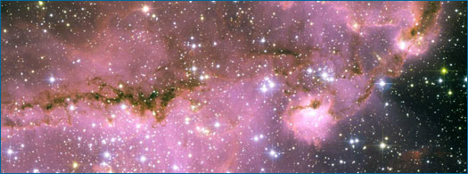
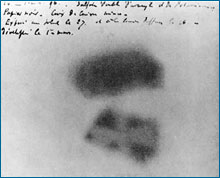

The early stages of a scientific investigation often rely on making observations, asking questions, and initial experimentation - essentially poking around - but the routes to and from these stages are diverse. Intriguing observations sometimes arise in surprising ways, as in the discovery of radioactivity, which was inspired by the observation that photographic plates (an early version of camera film) stored next to uranium salts were unexpectedly exposed. Sometimes interesting observations (and the investigations that follow) are suddenly made possible by the development of a new technology. For example, the launch of the Hubble Space Telescope in 1990 allowed astronomers to make deeper and more focused observations of our universe than were ever before possible. These observations ultimately led to breakthroughs in areas as diverse as star and planet formation, the nature of black holes, and the expansion of the universe.
Sometimes, observations are clarified and questions arise through discussions with colleagues and reading the work of other scientists - as demonstrated by the discovery of the role of chlorofluorocarbons (CFCs) in ozone depletion ...
EXPLORING AEROSOLS
Mario Molina
In 1973, chemists had observed that CFCs were being released into the environment from aerosol cans, air conditioners, and other sources, but it was discussions with his colleague and advisor, Sherwood Rowland, that led Mario Molina to ask what their ultimate fate was. Since CFCs were rapidly accumulating in the atmosphere, the question was intriguing, but before he could tackle the issue (which would ultimately lead to a Nobel Prize and an explanation for the hole in the ozone layer), Molina needed more information. He had to learn more about other scientists' studies of atmospheric chemistry, and what he learned pointed to the disturbing fate of CFCs.
Read Mario Molina's whole story.Furthermore, though observation and questioning are essential to the process of science, on their own, they are not enough to launch a scientific investigation; generally, scientists also need scientific background knowledge - all the information and understandings they've picked up from their scientific training in school, supplemented by discussions with colleagues and reviews of the scientific literature. As in Mario Molina's story, an understanding of what other scientists have already figured out about a particular topic is critical to the process. This background knowledge allows scientists to recognize revealing observations for what they are, to make connections between ideas and observations, and to figure out which questions can be fruitfully tackled with available tools. The importance of content knowledge to the process of science helps explain why science is often mischaracterized as a static set of facts contained in textbooks - science is a process, but one that relies on accumulated knowledge to move forward.
THE SCIENTIFIC STATE OF MIND

Some scientific discoveries are chalked up to the serendipity of being in the right place at the right time to make a key observation - but rarely does serendipity alone lead to a new discovery. The people who turn lucky breaks into breakthroughs are generally those with the background knowledge and scientific ways of thinking needed to make sense of the lucky observation. For example, in 1896, Henri Becquerel made a surprising observation. He found that photographic plates stored next to uranium salts were spotted, as though they'd been exposed to light rays - even though they had been kept in a dark drawer. Someone else, with a less scientific state of mind and less background knowledge about physics, might have cursed their bad luck and thrown out the ruined plates. But Becquerel was intrigued by the observation. He recognized it as something scientifically interesting, went on to perform follow-up experiments that traced the source of the exposure to the uranium, and in the process, discovered radioactivity. The key to this story of discovery lies partly in Becquerel's instigating observation, but also in his way of thinking. Along with the relevant background knowledge, Becquerel had a scientific state of mind. Sure, he made some key observations - but then he dug into them further, inquiring why the plates were exposed and trying to eliminate different potential causes of the exposure to get to the physical explanation behind the happy accident.